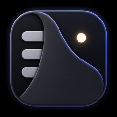

Write your own
Keep a focus, intention, deadline, or short reminder visible while you work.

MenuCloakA quiet place for what matters now
MenuCloak covers the application menus you are not using and replaces them with one line of calm, persistent information.
Designed to stay out of your way
MenuCloak uses the space above your application for constant or ongoing information. It never takes over the status items, clock, or Control Center on the right.
Keep a focus, intention, deadline, or short reminder visible while you work.
Hover over the covered area and your normal application menus return immediately.
Your existing menu bar apps remain where they are, without new crowding or rearrangement.
Optional Google Calendar connection
With your permission, MenuCloak reads upcoming events from your primary Google Calendar. A timed event can replace the focus line shortly before it starts, including its time and location. MenuCloak can also open a valid Google Meet link with a keyboard shortcut.
MenuCloak requests read-only Calendar access. OAuth credentials are stored in macOS Keychain, event data is processed locally, and MenuCloak does not operate a server that receives your calendar data.